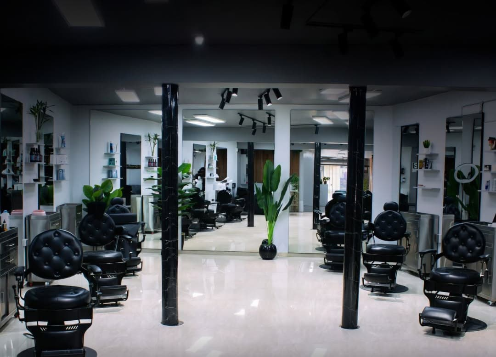

Misión
Brindar una experiencia de corte y cuidado personal de alta calidad, combinando técnicas tradicionales de barbería con las tendencias urbanas más exigentes, en un ambiente cómodo, profesional y cercano.
Fundada en 2024 en el corazón de Huancayo, Porte Fino nació con la misión de rescatar la verdadera esencia de la barbería tradicional. No somos solo una peluquería rápida; somos un club donde el hombre moderno viene a desconectar, charlar y salir luciendo su mejor versión.

Brindar una experiencia de corte y cuidado personal de alta calidad, combinando técnicas tradicionales de barbería con las tendencias urbanas más exigentes, en un ambiente cómodo, profesional y cercano.
Consolidarnos como la barbería líder y de mayor confianza en Huancayo, siendo reconocidos por la excelencia técnica de nuestros barberos, la atención personalizada y el estilo único.